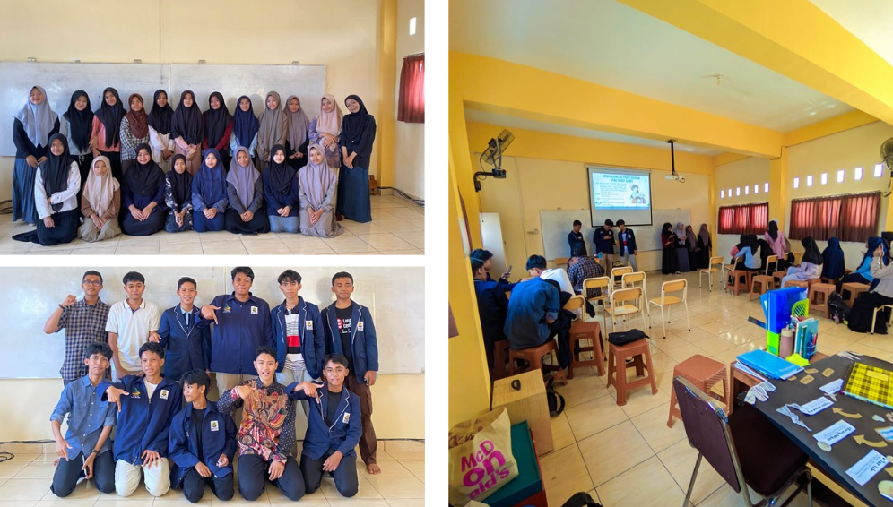
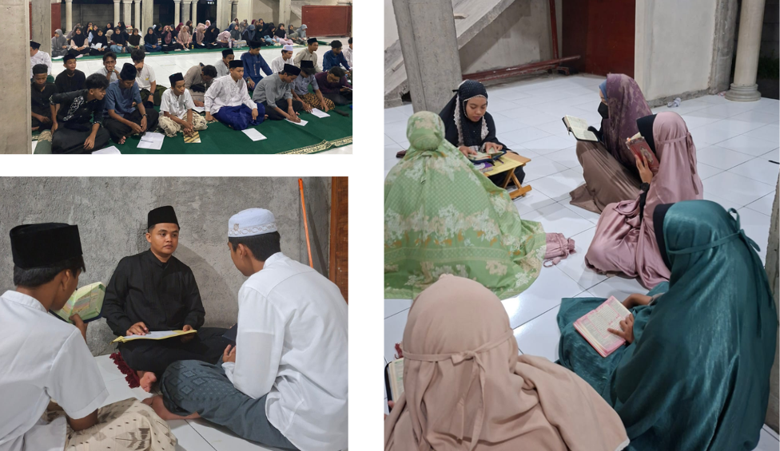
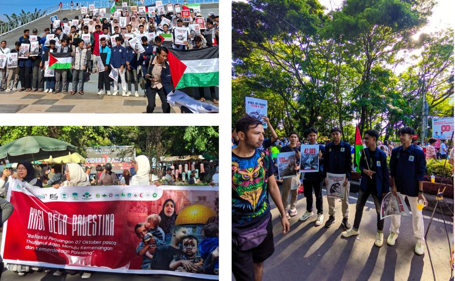

Galeri Kegiatan

Kegiatan Rapat OSIS
Dokumentasi kegiatan rapat OSIS antar kelas yang diadakan pada bulan September 2025.

Malam Bina & Takwa (MABIT)
Kegiatan rutinan berupa perenungan dan pembinaan mental spiritual untuk meningkatkan ketakwaan siswa.

Aksi Solidaritas Palestina
Aksi penggalangan dana dan doa bersama sebagai bentuk dukungan kemanusiaan untuk rakyat Palestina.